MCB, MCCB, DDR (RCCB) și RCBO — ce sunt și prin ce diferă
Ce sunt întreruptoarele automate modulare (MCB), întreruptoarele în carcasă turnată (MCCB), dispozitivele diferențiale (DDR / RCCB) și întreruptoarele diferențiale combinate (RCBO): cum sunt construite, cum funcționează, ce valori au și unde le cere Normativul I7-2011.
1. De ce avem nevoie de mai multe tipuri de aparate
Într-o instalație electrică apar trei categorii de situații periculoase, iar fiecare este tratată de altă funcție de protecție:
- Suprasarcina — curentul depășește lent valoarea admisibilă a conductorului (prea mulți consumatori pe același circuit). Izolația se încălzește și îmbătrânește.
- Scurtcircuitul — contact direct între faze sau între fază și neutru; curentul crește de sute sau mii de ori într-o fracțiune de secundă.
- Curentul de defect spre pământ — o parte din curent „scapă” din circuit printr-o izolație deteriorată sau prin corpul unei persoane. Este de ordinul miliamperilor, deci un întreruptor automat obișnuit nu îl vede.
Primele două se numesc în I7 supracurenți și sunt tratate de întreruptoarele automate (MCB, MCCB). A treia este tratată de dispozitivele diferențiale (DDR). RCBO este aparatul care le face pe toate trei.
Art. 4.3.1.1 — conductoarele active ale circuitelor trebuie protejate împotriva supracurenților datorați suprasarcinilor sau scurtcircuitelor; protecția la suprasarcină trebuie coordonată cu cea la scurtcircuit (art. 4.3.6.1 și 4.3.6.2).
Art. 4.3.1.2 — enumeră tipurile de dispozitive: pentru suprasarcină (relee termice, disjunctoare, siguranțe fuzibile), pentru scurtcircuit (disjunctoare cu declanșatoare rapide, siguranțe fuzibile) și pentru ambele (disjunctoare cu relee de supracurent și declanșatoare rapide).
Definiție (cap. 6) — disjunctor (întreruptor automat): aparat de comutație apt de a stabili, suporta și întrerupe curenții în condiții normale ale circuitului, precum și de a stabili, suporta o perioadă specificată și întrerupe curenții în condiții anormale (scurtcircuit etc.).
2. MCB — întreruptorul automat modular (siguranța automată)
MCB (Miniature Circuit Breaker) este întreruptorul automat modular cu montaj pe șină DIN de 35 mm, un modul lățime = 17,5 mm/pol. Se fabrică după SR EN 60898-1 (uz casnic și similar) și protejează circuitul la suprasarcină și la scurtcircuit. Nu detectează curenți de defect spre pământ.
Cum funcționează
- Declanșatorul termic — o lamelă bimetalică parcursă de curent; la suprasarcină se încălzește, se curbează și, după un timp invers proporțional cu supracurentul (secunde… minute), eliberează mecanismul. Reglajul este fix, din fabrică.
- Declanșatorul electromagnetic — o bobină cu armătură mobilă; la scurtcircuit forța magnetică deschide contactul în câteva milisecunde, fără temporizare. Pragul depinde de curba aparatului (B, C sau D).
Fotografii — construcția reală a unui MCB
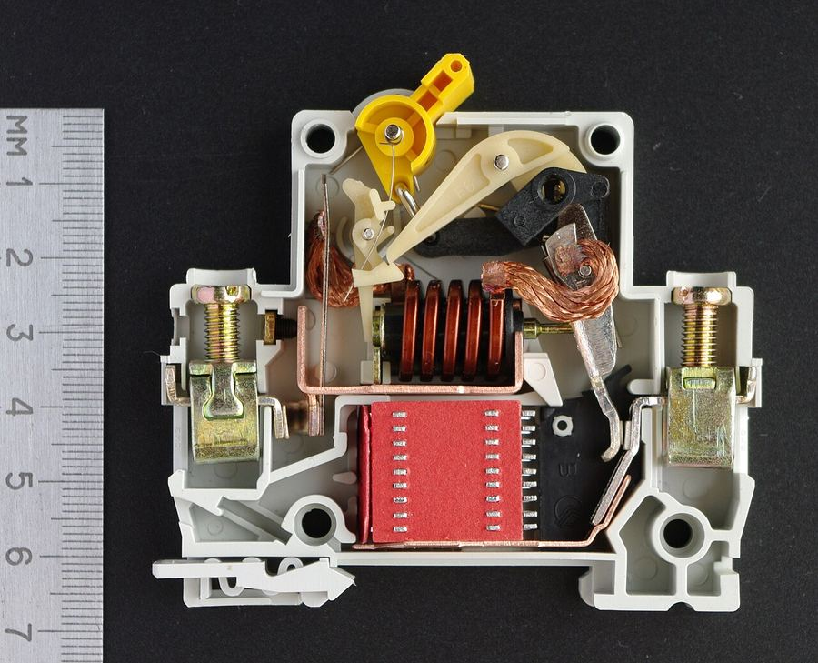
Foto 1. Întreruptor automat modular cu capacul scos, în poziția ÎNCHIS" loading="lazy">
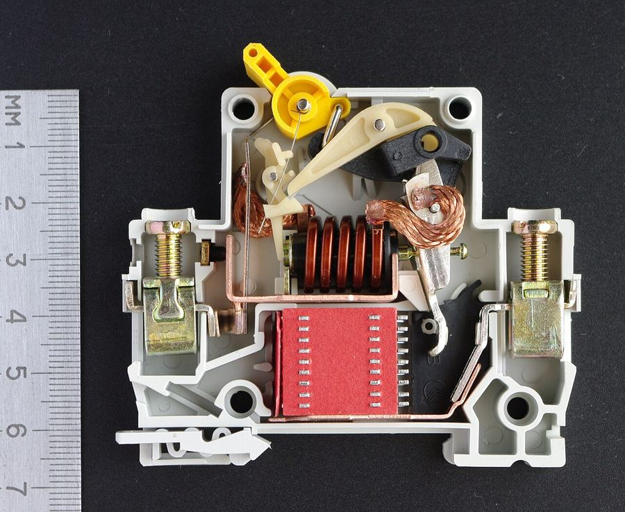
Foto 2. Același aparat în poziția DESCHIS: contactul mobil s-a rid" loading="lazy">

- maneta de acționare
- mecanismul cu zăvorâre
- contactele (fix și mobil)
- bornele de racord
- lamela bimetalică (termic)
- șurub de calibrare a termicului
- bobina electromagnetului (scurtcircuit)
- camera de stingere a arcului


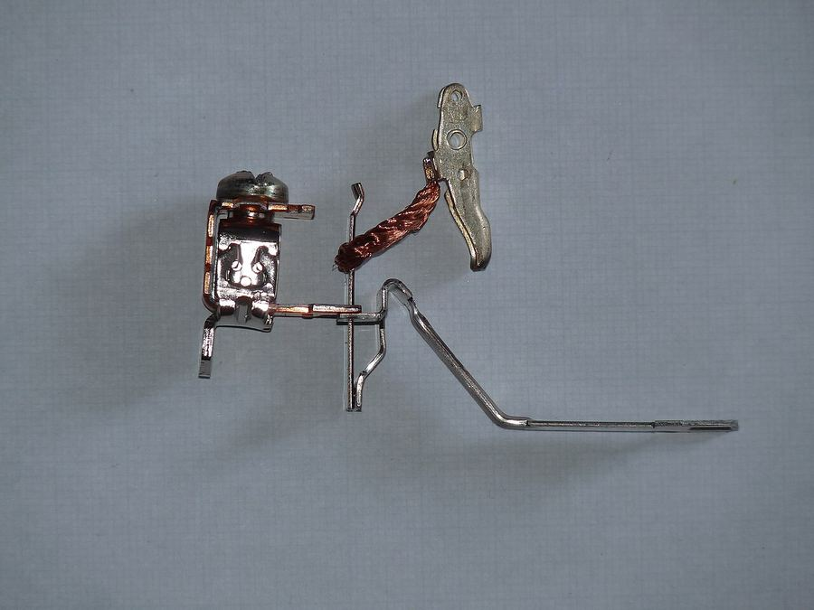
Foto 5. Lamela bimetalică cu cordonul flexibil de cupru. La suprasarcină " loading="lazy">
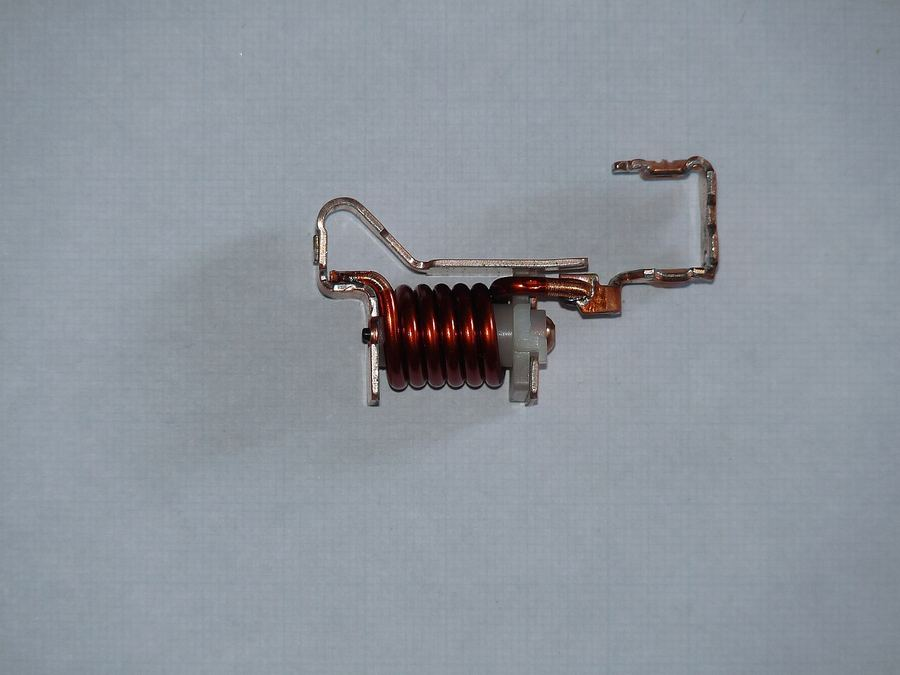
Foto 6. Bobina declanșatorului electromagnetic cu armătura (plunjerul) mo" loading="lazy">
Valori caracteristice
| Caracteristică | Valori uzuale MCB (SR EN 60898-1) |
|---|---|
| Curent nominal In | 6, 10, 13, 16, 20, 25, 32, 40, 50, 63 A (gama completă 0,5 … 125 A) |
| Capacitate de rupere Icn | 3, 4,5, 6, 10, 15, 20, 25 kA (uzual 6 kA în locuințe, 10 kA în tablouri generale) |
| Curbă de declanșare | B (circuite de iluminat, prize, cabluri lungi), C (uz general, motoare mici), D (transformatoare, curenți mari de pornire) |
| Număr de poli | 1P, 1P+N, 2P, 3P, 3P+N, 4P |
| Reglaje | fără reglaje; caracteristica este fixă |
| Tensiune nominală | 230/400 V c.a., 50 Hz |
Art. 4.3.2.1.3 — condițiile de coordonare între întreruptorul automat și conductor: Ic ≤ In ≤ Iadm și I2 ≤ 1,45·Iadm, unde Ic este curentul de calcul al circuitului, In curentul nominal al aparatului (sau curentul de reglaj Ir la aparatele reglabile), Iadm curentul admisibil al conductorului cu coeficienții de corecție, iar I2 curentul convențional de declanșare (1,45·In la MCB conform SR EN 60898-1, deci a doua condiție este îndeplinită automat dacă In ≤ Iadm).
Art. 4.3.5.1 — capacitatea de rupere trebuie să fie cel puțin egală cu curentul de scurtcircuit prezumat la locul de instalare; se admite una mai mică numai dacă în amonte există un aparat cu capacitatea necesară, cu caracteristici coordonate (filiație).
Art. 4.3.5.2 — scurtcircuitul trebuie întrerupt înainte ca conductorul să atingă temperatura maximă admisibilă: √t = k·S / I (t în s, S în mm², I curentul de scurtcircuit în A, k din tabelul 5.13).
Art. 5.3.4.0.3 — în circuitele monofazate se prevăd dispozitive bipolare (2P sau 1P+N); în locuințe, întreruptoare bipolare cu protecție la suprasarcină și scurtcircuit cel puțin pe conductorul de fază (1P+N).
Art. 5.3.4.3 — alegerea dispozitivelor de protecție la supracurent se face conform subcap. 4.3 și standardelor SR EN 60269 (siguranțe), SR EN 60898 și SR EN 60947 (întreruptoare).
3. MCCB — întreruptorul automat în carcasă turnată
MCCB (Moulded Case Circuit Breaker), numit în practică și întreruptor compact, este întreruptorul automat pentru curenți mari, fabricat după SR EN 60947-2 (aparataj industrial). Face aceleași două funcții ca MCB-ul (suprasarcină + scurtcircuit), dar pe o gamă de curenți și de capacități de rupere mult mai mare și cu declanșatoare reglabile.
Fotografii — MCCB


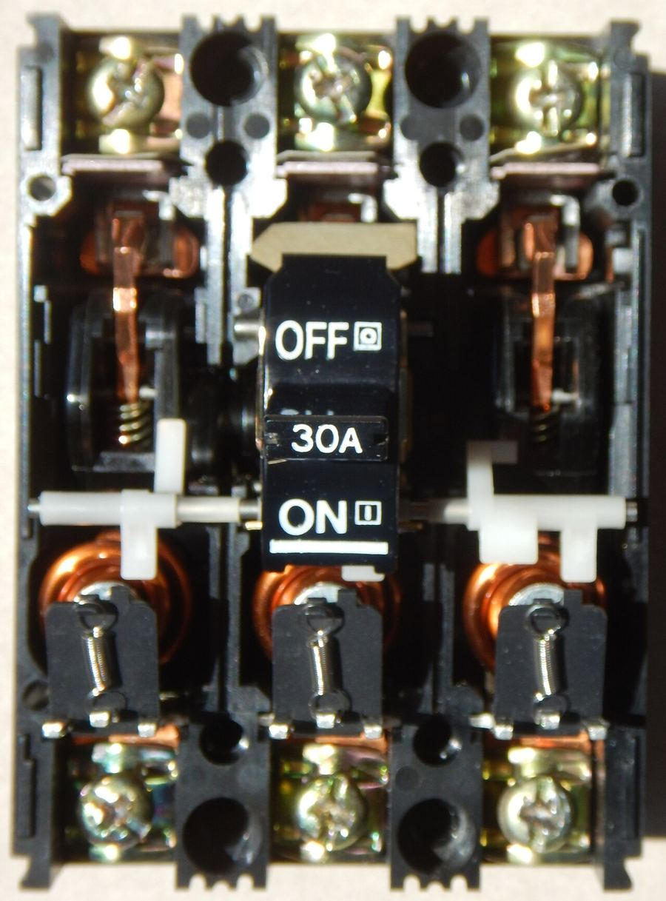
Foto 9. MCCB tripolar mic (30 A), cu capacul scos: cele trei căi de curen" loading="lazy">
Ce înseamnă „declanșator reglabil”
La un MCCB se pot regla, în funcție de model:
- Ir — curentul de reglaj al protecției la suprasarcină (termice), de obicei 0,7 … 1 × In (la declanșatoare electronice 0,4 … 1 × In);
- Isd / Im — pragul protecției la scurtcircuit cu scurtă temporizare (de exemplu 1,5 … 10 × Ir);
- Ii — pragul declanșării instantanee;
- temporizările tsd, tr — pentru realizarea selectivității cronometrice cu aparatele din aval.
Din această cauză, în relația din I7 art. 4.3.2.1.3, la aparatele reglabile se folosește Ir în locul lui In.
Accesorii care nu există la MCB (sau există limitat)
- declanșator de tensiune minimă (deschide la dispariția tensiunii);
- declanșator de deschidere prin bobină (deschidere de la distanță, de la un buton de oprire de urgență sau de la un sistem de detecție incendiu);
- motorizare — închidere/deschidere de la distanță, folosită la AAR (anclanșarea automată a rezervei) și la comanda din SCADA;
- contacte auxiliare de semnalizare (poziție, declanșat pe defect);
- execuție debroșabilă.
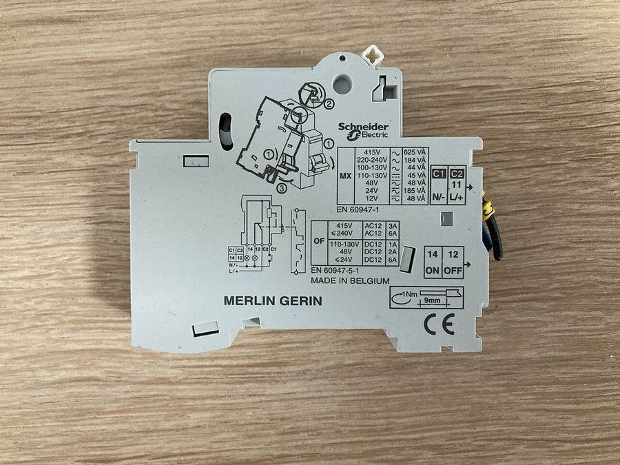
Foto 10. Bobină de declanșare MX (Merlin Gerin) — accesoriul care se mont" loading="lazy">
| Criteriu | MCB | MCCB |
|---|---|---|
| Standard | SR EN 60898-1 | SR EN 60947-2 |
| Curent nominal | 0,5 … 125 A | 16 … 1600 A |
| Capacitate de rupere | Icn 3 … 25 kA | Icu 16 … 100 kA (max. 200 kA) |
| Declanșatoare | termic + electromagnetic, fixe (curbe B, C, D) | termic-magnetic sau electronic, reglabile (Ir, Isd, Ii, temporizări) |
| Poli | 1P, 1P+N, 2P, 3P, 3P+N, 4P | 3P, 4P (1P și 2P mai rar) |
| Montaj | șină DIN 35 mm | placă de montaj, șasiu, debroșabil |
| Comandă la distanță | posibilă cu accesorii, rar folosită | curentă (bobine MX/MN, motorizare) |
| Utilizare tipică | circuite finale în locuințe, birouri, tablouri secundare | întreruptor general de tablou, coloane, motoare mari, industrie |
4. DDR — dispozitivul de protecție la curent diferențial rezidual
Pentru aceeași familie de aparate circulă mai multe prescurtări. Iată ce înseamnă fiecare:
RCD
Residual Current Device — termenul generic pentru orice aparat care detectează curentul diferențial rezidual. În I7 se numește DDR (dispozitiv de protecție la curent diferențial rezidual).
RCCB
Residual Current Circuit Breaker — DDR fără protecție la supracurent (SR EN 61008-1). În limbaj curent: „întreruptor diferențial” sau „diferențial simplu”. Trebuie protejat în amonte de un MCB sau de siguranțe.
RCBO
Residual Current circuit Breaker with Overcurrent protection — DDR cu protecție la supracurent integrată (SR EN 61009-1). În limbaj curent: „disjunctor diferențial”, „diferențial combinat”.
„RCB”, „ELCB”
Prescurtări întâlnite în cataloage și pe internet, nestandardizate (nu apar în SR EN 61008, SR EN 61009 sau I7). „ELCB” desemnează de regulă aparatele vechi cu declanșare la tensiune de defect, înlocuite azi de DDR. În documentații folosiți DDR / RCCB / RCBO.
Fotografii — construcția reală a unui DDR (RCCB)
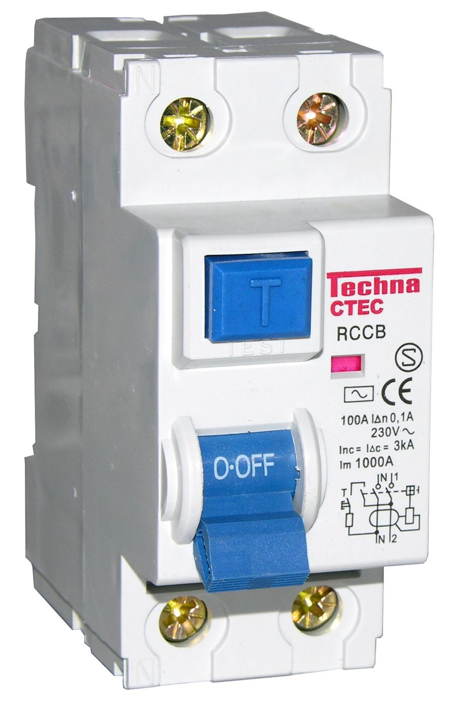
Foto 11. RCCB 2P, 100 A, IΔn = 100 mA (tip AC, marcaj ~), cu butonul de t" loading="lazy">
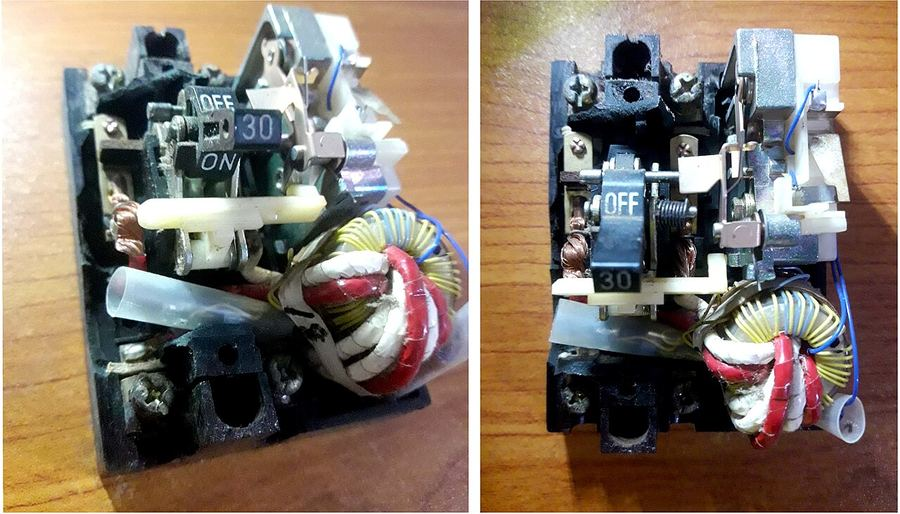
Foto 12. RCCB vechi, deschis: se vede clar torul (transformatorul " loading="lazy">
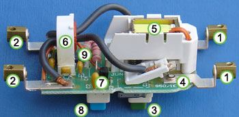
Foto 13. Interiorul unui RCCB, reperele numerotate:" loading="lazy">- borne de intrare
- borne de ieșire
- buton de reanclanșare
- contacte
- releul electromagnetic de declanșare
- torul (bobina de detecție)
- circuitul de amplificare
- butonul de test
- rezistorul / firul de test

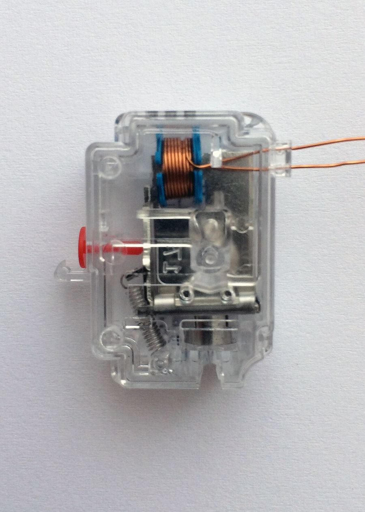
Foto 14. Releul de declanșare al unui DDR, în carcasă transparentă: magne" loading="lazy">
Curentul diferențial nominal IΔn
| IΔn | Rol | Unde se folosește |
|---|---|---|
| 10 mA | protecția persoanelor, sensibilitate mărită | săli de clasă, laboratoare de școală, spitale, piscine |
| 30 mA | protecția persoanelor (protecție suplimentară la atingere directă și indirectă) | prize ≤ 20 A, echipamente mobile în exterior ≤ 32 A, băi, locuințe — I7 art. 4.1.5.2.1, 7.1.3.5 |
| 100 mA | protecție la defect + selectivitate intermediară | circuite de prize > 32 A (I7 art. 7.5.2.1) |
| 300 mA | protecția împotriva incendiului și protecție la defect (atingere indirectă) | la branșament / tablou general — I7 art. 4.2.2.8; obligatoriu la școli, spitale, comerț, turism, construcții din lemn etc. |
| 500 mA … 1 A | protecție la defect, selectivitate în amonte | tablouri generale industriale, tip S sau cu temporizare (I7 art. 4.1.5.2.8) |
Tipul DDR după forma curentului de defect
- Tip AC — detectează numai curent rezidual sinusoidal. Din ce în ce mai puțin folosit; în multe țări UE nu mai este admis pentru circuite noi.
- Tip A — sinusoidal + continuu pulsatoriu (redresoare monofazate: mașini de spălat, plite cu inducție, surse în comutație). Alegerea implicită pentru locuințe.
- Tip F — tip A + curenți cu frecvențe compuse (convertizoare monofazate, pompe de căldură).
- Tip B — tip A + curent continuu neted (convertizoare trifazate, stații de încărcare auto, invertoare fotovoltaice fără separare galvanică).
Definiție (cap. 6) — curent diferențial rezidual: suma fazorială a valorilor curenților în toate conductoarele active, la același timp, într-un punct dat al circuitului.
Art. 4.1.5.2.1 — în sistemele de tensiune alternativă trebuie prevăzută protecție suplimentară prin DDR cu IΔn ≤ 30 mA pentru: prizele de utilizare generală cu In ≤ 20 A folosite de persoane obișnuite (excepții: prize sub supravegherea personalului calificat și prize dedicate unui anumit echipament) și echipamentele mobile cu In ≤ 32 A pentru utilizări în exterior.
Art. 4.1.5.2.2 – 4.1.5.2.3 — DDR ≤ 30 mA este recunoscut ca protecție suplimentară, dar nu ca mijloc unic de protecție; nu înlocuiește măsurile de bază (legare la pământ, întrerupere automată).
Art. 4.1.5.2.4 — valorile normalizate IΔn: 6 – 10 – 30 – 100 – 300 – 500 mA și 1 A.
Art. 4.1.5.2.5 – 4.1.5.2.6 — clasificarea tip AC, A (casnic, SR EN 61008-1 / 61009-1) și B (industrial, SR EN 60947-2).
Art. 4.1.5.2.7 — DDR de uz general: timp de declanșare 40 … 300 ms; tip „S” (selectiv, temporizat): 150 … 500 ms.
Art. 4.1.4.1.11 — DDR nu se utilizează în rețele TN-C; în TN-C-S se montează numai pe partea TN-S. Dacă se folosește DDR pentru protecție la defect, circuitul trebuie protejat și la supracurent conform cap. 4.3.
Art. 4.1.4.1.14 — în rețele TT: Ra · IΔn ≤ 50 V (Ra = rezistența prizei de pământ + conductor de protecție). Exemplu: cu DDR de 300 mA, Ra ≤ 166 Ω; cu 30 mA, Ra ≤ 1666 Ω.
Art. 4.2.2.8 — pentru diminuarea riscului de incendiu: DDR ≤ 300 mA la branșament sau punct de alimentare; obligatoriu la clădiri de învățământ, sănătate, comerț, turism, construcții din lemn, depozite de mărfuri combustibile, săli aglomerate, clădiri înalte etc.
Art. 4.2.2.9 — protecție diferențială obligatorie pe circuitele receptoarelor electronice care funcționează nesupravegheate (fax, calculatoare, TVCI, antiefracție).
Art. 5.3.4.1.2.1 — DDR trebuie să întrerupă toate conductoarele active; niciun conductor de protecție nu trece prin tor; circuitele se împart astfel încât curenții de fugă din funcționarea normală să nu producă declanșări intempestive.
Art. 5.3.4.1.2.3 — în locuințe, DDR este măsură tehnică principală de protecție (HG 1146/2006).
Art. 7.1.3.5 — în încăperi cu cadă sau duș: toate circuitele protejate prin DDR ≤ 30 mA.
5. RCBO — întreruptorul automat diferențial combinat
RCBO reunește într-un singur aparat (SR EN 61009-1) un MCB și un DDR: protejează circuitul la suprasarcină, la scurtcircuit și persoanele/instalația la curent de defect. Se montează pe fiecare circuit final în parte, deci un defect pe un circuit nu scoate din funcțiune restul instalației.
Fotografii — RCBO


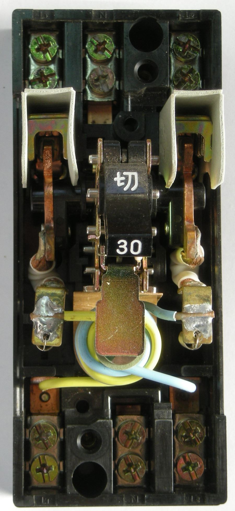
Foto 16. Întreruptor cu protecție diferențială și la supracurent, 30 A, d" loading="lazy">
RCCB + MCB sau RCBO? Cele două scheme uzuale
6. Selectivitatea dispozitivelor diferențiale
Când se pun în serie două DDR (de exemplu 300 mA la branșament și 30 mA pe circuitele finale), trebuie ca la un defect să declanșeze numai cel din aval. Condițiile din I7 sunt două, îndeplinite simultan: raportul curenților IΔn ≥ 3 și aparatul din amonte de tip „S” (temporizat).
Art. 4.3.7.1 — când mai multe dispozitive de protecție sunt înseriate, caracteristicile lor se aleg astfel încât să funcționeze numai protecția cea mai apropiată de defect, fără a scoate din funcțiune întreaga instalație (la siguranțe fuzibile: cel puțin două trepte între curenții nominali). Se cere corelarea cu protecția din instalația de racord a furnizorului.
Art. 4.3.6.1 — un singur aparat asigură atât protecția la suprasarcină cât și la scurtcircuit dacă îndeplinește condițiile de la 4.3.3 și are capacitatea de rupere ≥ curentul de scurtcircuit prezumat (4.3.5.1). Acesta este cazul MCB, MCCB și RCBO.
7. Tabel de sinteză
| Aparat | Standard | Suprasarcină | Scurtcircuit | Curent de defect | Curent nominal | Capacitate de rupere | Unde se montează |
|---|---|---|---|---|---|---|---|
| MCB | SR EN 60898-1 | da | da | — | 0,5 … 125 A | 3 … 25 kA | circuite finale, tablouri de distribuție |
| MCCB | SR EN 60947-2 | da (reglabil) | da (reglabil) | — (opțional bloc Vigi / DDR atașabil) | 16 … 1600 A | 16 … 100 (200) kA | întreruptor general, coloane, industrie |
| RCCB (DDR) | SR EN 61008-1 | — | — | da (IΔn 10 mA … 1 A) | 16 … 125 A | Icn condițional 6 … 10 kA, numai cu protecție în amonte | în amonte de un grup de MCB |
| RCBO | SR EN 61009-1 | da | da | da | 6 … 63 A | 6 … 10 kA | pe fiecare circuit final |
Regulă de alegere pe scurt
- Pe orice circuit: protecție la supracurent dimensionată după I7 art. 4.3.2.1.3 (Ic ≤ In ≤ Iadm) și 4.3.5.1 (capacitate de rupere ≥ Isc prezumat).
- Prize ≤ 20 A, echipamente mobile exterioare, băi, locuințe: în plus DDR ≤ 30 mA, tip A (art. 4.1.5.2.1, 7.1.3.5, 5.3.4.1.2.3).
- La branșament / tablou general, în clădirile enumerate la art. 4.2.2.8: DDR ≤ 300 mA, tip S pentru selectivitate cu cele de 30 mA.
- Curenți peste 125 A sau cerințe de reglaj, motorizare, selectivitate cronometrică: MCCB.
- DDR niciodată în TN-C; PE nu trece prin tor; în TT verificați Ra · IΔn ≤ 50 V.
8. Test de verificare
Răspundeți pe caiet. Se punctează și justificarea, nu doar rezultatul.
- Ce funcții de protecție asigură un MCB? Dar un RCCB? Dar un RCBO?
- Un MCB C16 are Icn = 6 kA. Ce înseamnă „C” și ce înseamnă „6 kA”? Între ce valori de curent declanșează instantaneu?
- Un circuit de prize are curentul de calcul Ic = 14 A și conductor de 2,5 mm² Cu cu Iadm = 21 A (după corecții). Alegeți In al întreruptorului și verificați condițiile din I7 art. 4.3.2.1.3.
- De ce nu trece conductorul PE prin torul unui DDR? Ce s-ar întâmpla dacă ar trece?
- Într-o rețea TT, priza de pământ are Ra = 120 Ω. Se poate folosi un DDR de 300 mA pentru protecția la defect? Dar unul de 500 mA? (art. 4.1.4.1.14)
- Într-un tablou avem un RCCB de 300 mA la intrare și RCBO de 30 mA pe circuite. Ce condiții trebuie să îndeplinească RCCB-ul de la intrare ca să nu declanșeze el primul la un defect pe un circuit final?
- Enumerați trei situații în care I7 impune DDR de cel mult 30 mA.
- Prin ce se deosebește un MCCB de un MCB din punct de vedere al: curentului nominal, capacității de rupere, reglajelor, montajului?
- Ce tip de DDR (AC, A, F, B) alegeți pentru: (a) prize obișnuite în locuință; (b) o stație de încărcare auto trifazată; (c) o pompă de căldură cu convertizor monofazat?
- De ce un RCCB trebuie să aibă în amonte un MCB sau siguranțe, iar un RCBO nu?
Surse cu imagini de catalog (secțiuni și vederi explodate)
Fotografiile de catalog ale producătorilor sunt protejate prin drept de autor și nu sunt încorporate în pagină; le puteți deschide direct la sursă, iar la clasă pot fi proiectate cu menționarea acesteia:
- Schneider Electric, Electrical Installation Guide — Standards and description of circuit-breakers: fig. H21 (părțile principale ale unui întreruptor automat), H22–H23 (MCB și RCBO), H25 (Compact NSX cu accesorii), H26 (Masterpact).
- Schneider Electric, Electrical Installation Guide — Fundamental characteristics of a circuit-breaker: curbe de declanșare, Icu/Ics, limitarea curentului.
- Eaton — Circuit breakers fundamentals: vederi în secțiune ale întreruptoarelor termic-magnetice.
- Electrical Engineering Portal — The basics of molded case circuit breakers: construcție, declanșatoare, accesorii.
- Schneider Electric — Compact NSX & NSXm — catalog.
Bibliografie
- Schneider Electric, What is the difference between MCB, MCCB, RCB, RCD, RCCB and RCBO? — punct de plecare; valorile numerice au fost verificate după standardele SR EN.
- Normativ I7-2011 pentru proiectarea, execuția și exploatarea instalațiilor electrice aferente clădirilor (aprobat prin Ordinul MDRT nr. 2741/2011, M.Of. nr. 802 bis/2011); articolele citate: 4.1.4.1.11, 4.1.4.1.14, 4.1.5.2.1 – 4.1.5.2.8, 4.2.2.8, 4.2.2.9, 4.3.1.1, 4.3.1.2, 4.3.2.1.3, 4.3.5.1, 4.3.5.2, 4.3.6.1, 4.3.7.1, 5.3.4.0.3, 5.3.4.1.2.1, 5.3.4.1.2.3, 5.3.4.3, 7.1.3.5, 7.5.2.1. Text consultat: arya.ro. Notă: normativul a fost completat prin Ordinul 959/2023 (AFDD, art. 4.2.2.10 – 4.2.2.12); verificați ediția în vigoare.
- Fotografiile aparatelor provin de pe Wikimedia Commons; autorul și licența (CC BY / CC BY-SA / CC0 / domeniu public) sunt indicate sub fiecare fotografie. Schemele (fig. 1–6) sunt desene originale.
- SR EN 60898-1 (MCB), SR EN 60947-2 (MCCB, DDR industriale), SR EN 61008-1 (RCCB), SR EN 61009-1 (RCBO), SR EN 62423 (DDR tip F și B).